Live a new culture
Live with locals and volunteers from around the world, and see everyday life from the inside, not as a tourist.

Spend four to eight weeks on a community project abroad, working toward the UN Sustainable Development Goals alongside a local host organization.
Volunteer Abroad places you on a grassroots project run by an NGO, school, or community organization in a host country, tackling issues like education access, environmental sustainability, or public health.

Students and recent graduates aged 18–30 who want hands-on social impact experience and are comfortable working in a new cultural setting.
Four weeks is short. What you bring home lasts a lot longer.
Live with locals and volunteers from around the world, and see everyday life from the inside, not as a tourist.
Work on a UN Sustainable Development Goal with a host organisation that needs your help, with results you can point to.
Step outside your comfort zone, solve problems on the ground, and build the confidence to lead in unfamiliar places.
Come home with a global network of volunteers, hosts and AIESEC members who stay in touch long after.
AIESEC supports you before, during and after your exchange.
Hand-picked Global Volunteer projects open right now, each tackling a UN Sustainable Development Goal with a local host organisation.
Browse live opportunities by country, cause area, or date, and shortlist projects that fit your goals.
Submit your application through the AIESEC global platform — no fee to apply.
Speak with the host committee, get matched to a project, and receive your acceptance.
Attend AIESEC in Bangladesh's pre-departure training covering logistics, safety, and cultural prep.
Arrive on-site, complete onboarding with your host, and get to work on real deliverables.
Students from Bangladesh who went abroad with AIESEC share what changed for them.
No. Projects are designed for first-time volunteers, with full pre-departure and on-arrival orientation provided by AIESEC.
There's no fee to apply. Once matched, a program participation fee covers AIESEC's exchange support; accommodation and local costs vary by host country.
Yes — you can browse and filter live opportunities by country, cause area, and dates before applying.
All host organizations are vetted by the local AIESEC committee, and you'll have a dedicated local contact throughout your project.